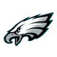

Braves bolster rotation by signing Mahle to 2-year, $40 million deal after strong 9-game audition
The Atlanta Braves have preserved important depth in their rotation by signing free-agent right-hander Tyler Mahle to a $40 million, two-year contract.
Every league’s headlines, every team’s news.

 Lakers at Spurs
Lakers at Spurs
 Warriors at Trail Blazers
Warriors at Trail Blazers


 Kraken vs. Oilers
Kraken vs. Oilers


 Penguins vs. Sabres
Penguins vs. Sabres
 Kansas City Chiefs vs Buffalo Bills Thanksgiving Day
Kansas City Chiefs vs Buffalo Bills Thanksgiving Day


Philadelphia Eagles vs. Dallas Cowboys Thanksgiving DayThe Atlanta Braves have preserved important depth in their rotation by signing free-agent right-hander Tyler Mahle to a $40 million, two-year contract.

Mahle thrived as Atlanta's No. 2 starter after coming over from the Giants at the trade deadline

Braves beef up starting rotation days before MLB lockout begins by signing pitcher to $40 million deal.


The 32-year-old righty was dealt from the Giants to the Braves in August.


Félix Hernández was a right-handed pitcher who spent all 15 of his MLB seasons with the Mariners. This is his third year on the ballot. He received votes on 46.1% of ballots last year, up from 20.6% the year before.Hernández finished with a 169–136 record and a 3.42 ERA across 419 games, including 418 starts. […]

TThere seem to be strong opinions on the Chisholm signing. The contract is interesting. He gets $18.5 million for this coming season (well, this possibly coming season). He has a $16 million option for the next season. He’ll take it only if he has a terrible year or gets injured. If he declines the option, […]

Torquay United manager Jimmy Ball says he could not believe his side did not beat Chelmsford City in National League South.

Real Madrid and Alavés face off on Matchday 14 of La Liga. Madrid come into this game after a dream second half against PSV, while Alavés have suffered a dip after a flying start to the season.Here'...

Truro City manager John Askey hails his side's character as they came from 3-0 down with 10 men to draw 3-3 with Dover Athletic.

Serie A side Como have lost Moise Kean until at least 2027 and the Italian faced fitness worries even before that, having joined from Fiorentina. But with the lakeside club doing well in the Champions...

Manchester United 0-4 Brentford: Mauricio Pochettino’s first home match in charge ended with a string of historic lows as the Bees won at Old Trafford for the first time since 1937

Cycling through three head coaches and crashing out in the first round proved that lavish spending on aging stars cannot replace a cohesive identity or cover for structural weaknesses

Portadown boss David Jeffrey says he and the club "need to reflect, review and see where we're going" amid mounting pressure after their difficult start to the season.

Paolo Vanoli believes he is ‘the right man in the right place’ to rescue Fiorentina all over again, as they prepare for a relegation battle with Udinese.It kicks off at the Bluenergy Arena on Sund...

Tagovailoa signed a one-year deal to join the Falcons in March.

Kansas City’s only competition in the AFC West showcased its biggest flaw on Friday afternoon.

Skip the low-payout chalk and target profitable touchdown scorers, including Anthony Richardson's rushing ability and Justin Jefferson in a bounce-back spot

The Denver Broncos won’t win anything with Bo Nix.

5 questions with Dawgs by Nature

Steelers legends Antonio Brown and Ben Roethlisberger reunite.

Tune in to the latest Bears for Breakfast episode as the guys talk Bears-Saints!

Jets looking for revenge against the Dolphins this Sunday

SAN ANTONIO — The NBA will review the incident involving Luka Doncic and the fan after the Lakers’ loss to the Spurs on Friday night at Frost Bank Center, a...

The previously unknown parts of the Lakers’ regular-season schedule were revealed.

Westchester Knicks guard Rob Dillingham getting sucker-punched sparked an on-court melee during a game against the Capital City Go-Go.

Cooper Flagg led the way and Max Christie iced Friday night’s clutch win over Phoenix

Welcome to the knockout rounds, a single-elimination tournament for the NBA Cup.

Top NBA betting apps include DraftKings, FanDuel, BetMGM, bet365, Caesars, Fanatics Sportsbook and Hard Rock Bet

Doncic threw his wristband to someone sitting courtside, she didn't want it, and things escalated.

The Sixers are right back to work less than 24 hours after their win Friday night to take on the hot Houston Rockets on Saturday.

Stone being evaluated for Golden Knights; Tanev placed on IR by Maple Leafs

Down three goals and missing several key players, the Colorado Avalanche refused to fold, delivering a stunning comeback victory over the Central Division-leading Minnesota Wild and proving why this team should never be counted out.


As the Senators return to Carolina, we revisit an unforgettable playoff game featuring a disallowed overtime winner, a penalty shot, incredible saves and a heartbreaking finish.

The Pittsburgh Penguins will look to sweep the weekend on Saturday.

Head coach Lindy Ruff indicated after the 6-3 loss to Pittsburgh that the young center could be out a least a month

Kevin Holland doesn't think the UFC is on board for him to fight Mike Perry.

Alex Pereira is back sparring UFC middleweight champion Sean Strickland ahead of his upcoming co-main event clash opposite heavyweight knockout artist Sergei Pavlovich at UFC 335 next month in Las Vegas, Nevada. It’s no secret that Pereira’s next fight is one of his most important ever. The former UFC middleweight and…

Sanjar Azhibaev ignored officials and the final buzzer

Black Combat has released a full version of the Nov. 21 rematch between Chris Leben and Yoshihiro Akiyama.

If Alexander Volkanovski wants a shot at Justin Gaethje’s UFC lightweight title then he’s going to have to step over Arman Tsarukyan’s cold dead body to get it. Volkanovski, who is coming off a tremendous defense of his UFC featherweight title against Movsar Evloev at UFC 333 last October, has already lobbied for a…

Cody Garbrandt knows a thing or two about teammate title drama.

Dustin Poirier is very high on Yaroslav Amosov going into the UFC Saudi Arabia co-main event vs. Ian Machado Garry.l
Check out which veterans of the UFC are competing around the globe this weekend.